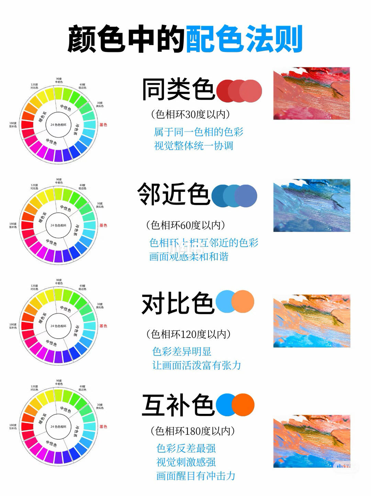
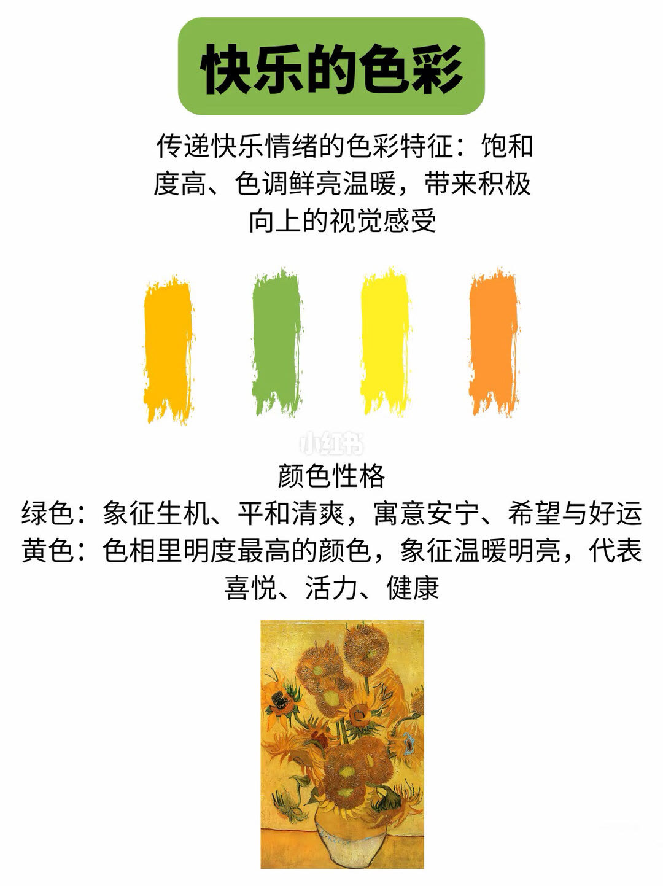
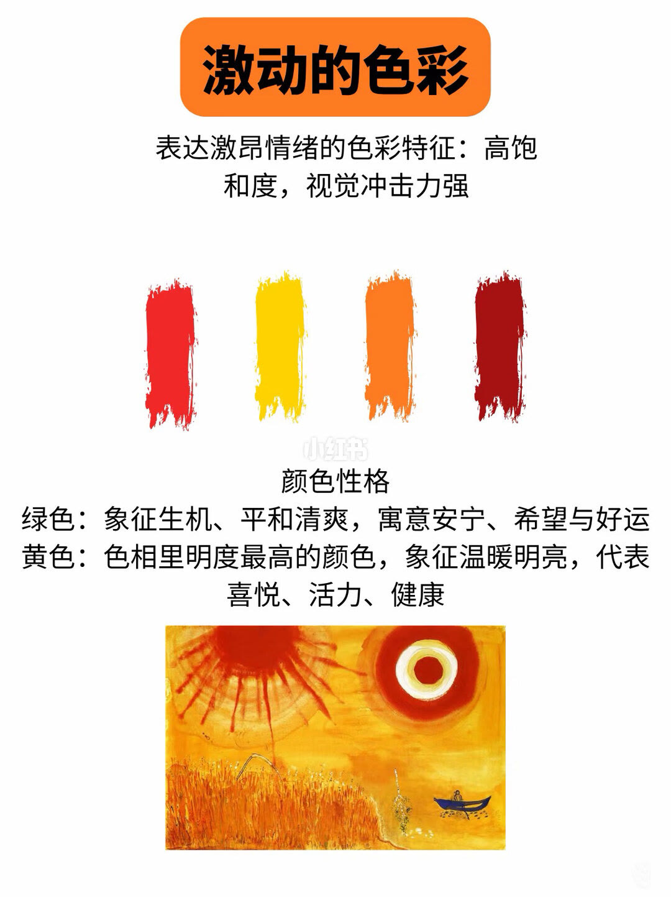
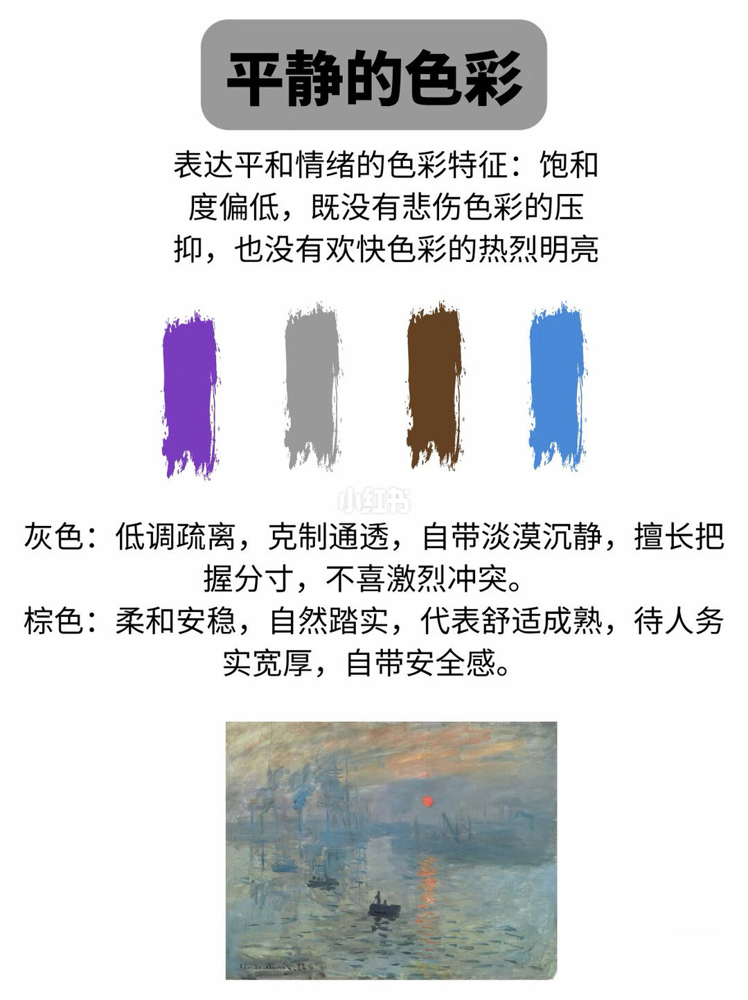
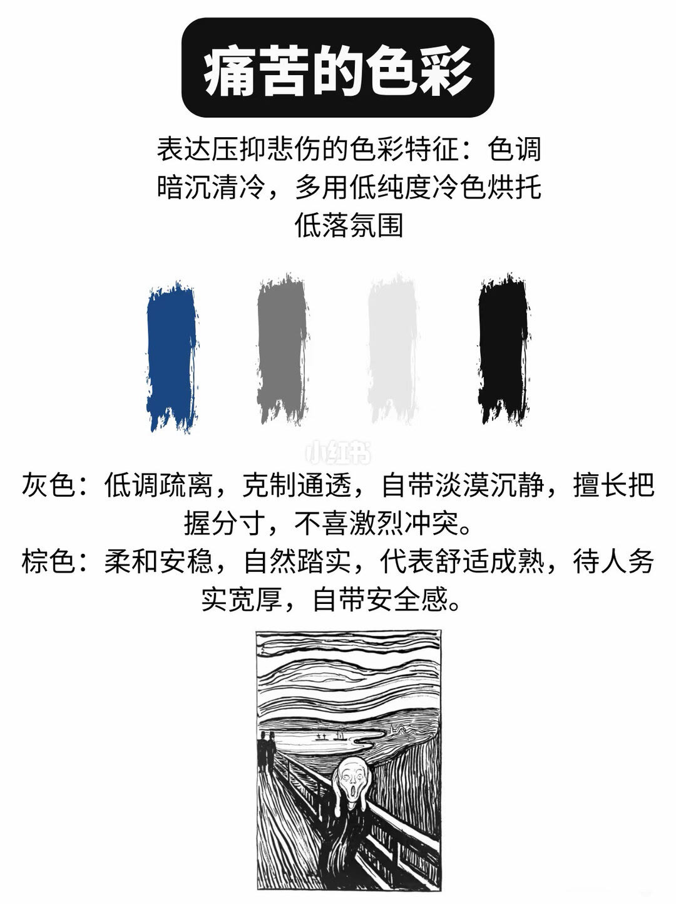

图文实录 · 小红书 · 丹东艺雅工作室
颜色中的配色法则
第一页用色相环把配色分成 30°、60°、120°、180° 四档。后面四页改谈情绪：快乐、激动、平静、痛苦，而且色块和性格说明并不总是同一组颜色。
1/5
四档角度
24 色环上标着暖色、冷色和中性色，环边还有 30° 同类、60° 邻近、90° 中差、120° 对比、180° 互补。四行正文是：同类色，色相环 30 度以内，同一色相，整体统一；邻近色，60 度以内，画面柔和；对比色，写法是「120 度以内」，差异明显、活泼有张力；互补色，写法是「180 度以内」，反差最强、醒目。同类色的例子是一组红，邻近色是蓝绿，对比色是浅蓝对橙，互补色是深蓝对亮橙。90° 只出现在环的刻度上，没有单独成行。

2/5
快乐的色彩
特征写成饱和度高、色调鲜亮温暖。四条色块是金黄、鲜绿、柠檬黄、橙。性格只写了两种：绿色是生机、平和、希望和好运；黄色是色相里明度最高的，温暖、喜悦、活力和健康。底下是向日葵，大面积黄。橙和柠檬黄没有单独的性格句。

3/5
激动的色彩
标题下写：表达激昂情绪的特征是高饱和、视觉冲击强。四条色块是红、亮黄、橙、暗红。颜色性格一栏仍在写绿色的生机平和，以及黄色明度最高、代表喜悦。绿色不在这四条色块里。底下是黄橙红的田野和两个太阳状的圆，右下有一小块深蓝。这一页的色块和性格说明对不上。

4/5
平静的色彩
特征：饱和度低，既没有悲伤色的压迫，也没有快乐色的强烈明亮。四条色块是灰紫、中性灰、深棕、灰蓝。灰色被写成低调、疏离、克制、善于节制、不喜欢激烈冲突。棕色被写成柔软、稳定、自然、踏实，代表舒适、成熟和安全感。底下是莫奈《印象·日出》那类灰蓝晨雾和一颗橙红太阳。画里的橙红不在四条色块中。

5/5
痛苦的色彩
特征：色调暗沉清冷，多用低纯度冷色。四条色块是深蓝、深灰、浅灰、黑。性格栏再次写灰色的低调疏离，以及棕色的稳定安全感。棕色不在这四条色块里。底下是蒙克《呐喊》的黑白画法。低纯度冷色和棕色说明又是两套话。

汇总
角度表能用，情绪页要看色块
第 1 页把同类、邻近、对比、互补收成 30°、60°、120°、180°，对比和互补的正文写的是「以内」，环上还有一个没有展开的 90°。第 2 到第 5 页用饱和度和冷暖谈情绪。第 3 页和第 5 页的性格说明与当页色块不一致，绿、黄、棕不能从那两页的色块里读出来。这些是笔记里的象征，不是测出来的情绪。